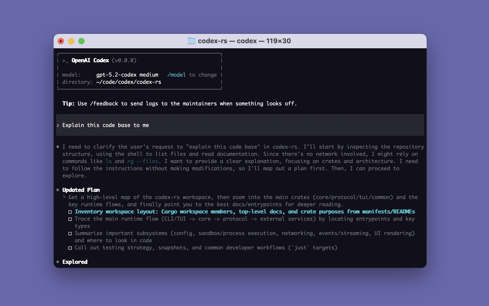
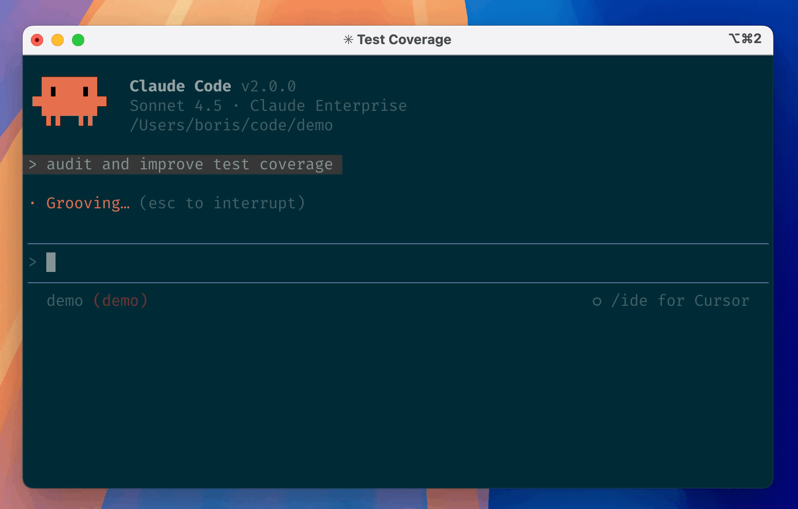

Как работать с AI-агентами
Модель, среда, стоимость, инструменты и путь к результату.
Сначала поймём слои
Модель → агент и его обвязка → рабочий интерфейс → ваши системы.
- 01 Модель обрабатывает информацию
- 02 Обвязка организует действия
- 03 Интерфейс даёт вам управление
- 04 Инструменты подключают внешний мир
Что такое языковая модель
Модель — обученная система, которая преобразует входные данные в продолжение ответа.
- Обучение: на множестве примеров модель настраивает параметры
- Работа: получает контекст и генерирует результат по частям
- Может анализировать текст, код и другие данные — если это поддерживается
Одна модель — много продуктов
GPT, Claude, Gemini и DeepSeek — семейства моделей. ChatGPT, Claude и другие приложения дают к ним доступ.
- Одна модель может работать в чате, агенте или приложении
- Одна среда может поддерживать разные модели
- Доступность зависит от приложения, тарифа и настроек
Токен — единица обработки
Текст разбивается на части: токеном может быть слово, часть слова, знак или пробел.
- Русский и английский разбиваются по-разному
- Точная разбивка зависит от токенизатора модели
- Миллион токенов ≠ миллион слов
За что расходуются токены
Модель получает вход и создаёт выход. У одной задачи может быть много вызовов.
- Вход: поручение, инструкции, переданная история, файлы и результаты инструментов
- Выход: ответ, вызовы инструментов и учитываемые reasoning-токены
- Повторный вызов снова обрабатывает переданный ему контекст
Как посчитать стоимость
Пример GPT-6.1 Sol: вход $2 / млн токенов; выход $10 / млн.
- 100 000 входных × $2 / 1 000 000 = $0,20
- 20 000 выходных × $10 / 1 000 000 = $0,20
- Итого $0,40 за эти вызовы
Почему задача может стать дороже
Стоимость зависит от модели и объёма всех вызовов, а не только от длины последнего сообщения.
- Длинная история и большие файлы увеличивают вход
- Агент может делать много шагов и повторных вызовов
- Кеширование и тарифы инструментов меняют расчёт
Подписка и API — разные способы доступа
Подписка обычно даёт человеку доступ к приложению в рамках тарифа; API позволяет программе вызывать модель.
- ChatGPT Plus / Claude Pro: продукт, функции и лимиты тарифа
- API: отдельный ключ, биллинг и тарификация использования
- Некоторые инструменты принимают вход по подписке или API-ключ
Контекстное окно — рабочая область модели
Это ограничение на объём информации, учитываемой моделью в запросе и генерации.
- В окне: правила, вопрос, часть истории, документы и результаты инструментов
- При заполнении среда может сокращать историю или подгружать данные по запросу
- Большое окно не гарантирует точности
Память ≠ окно контекста
Память хранится вне отдельного вызова; агент должен получить её в нужный момент.
- Контекст сейчас: что передали модели
- Память: сохранённые сведения, файлы, база знаний
- Правила: явные инструкции, например AGENTS.md
Skill — инструкция для повторяемой работы
Навык описывает, когда его использовать, какие шаги выполнить и как проверить результат.
- Правила действуют на работу в целом
- Навык подключается под конкретный тип задачи
- Контекст и документы дают факты
Агент — модель, которая работает с инструментами
Он может разбить задачу на шаги, вызвать доступные инструменты и учесть результат.
- Прочитать папку → написать файл
- Запустить программу → увидеть ошибку → исправить
- Попросить человека о решении на границе прав
Harness: что происходит вокруг модели
Обвязка управляет циклом работы агента и связывает модель с рабочей средой.
- Собирает инструкции, контекст и состояние
- Вызывает модель и запускает разрешённые инструменты
- Возвращает результаты модели и продолжает работу
- Контролирует доступы, сжатие контекста и запросы подтверждения
Одна модель, разная обвязка — разный результат
От среды зависит, что агент увидит, что сможет сделать и как проверит себя.
- Без инструментов: предложит код в ответе
- С файлами и терминалом: создаст файл и запустит команду
- С тестами и правилами: увидит ошибку и получит обратную связь
Из чего состоит один цикл
Задача → контекст → модель → инструмент → результат → следующий шаг.
- Инструмент: файл, терминал, браузер или подключённый сервис
- Результат: содержимое файла, вывод программы, ошибка
- Граница: разрешения определяют, что можно делать
Где работать: от чата до проекта
Выбирайте рабочую поверхность под задачу и нужную степень контроля.
- Чат / Work / Cowork: вопросы, документы и задачи с доступными инструментами
- Codex / Claude Code / Pi: агент работает с проектом, файлами и командами
- Cursor / VS Code: редактор с кодом, файлами и агентами
- BB: проекты, треды, окружения и управление агентной работой
Codex: агент в терминале
На примере видно: выбранная модель, рабочая папка, поручение и ход действий.
- Терминал — текстовый интерфейс к программам
- Codex также доступен как приложение и расширение
- Агент работает в выбранном проекте

Claude Code: тот же класс задач
Агент получает поручение и работает в папке через доступные ему инструменты.
- Интерфейс может быть терминальным, в IDE или приложении
- Файлы и действия зависят от настроек доступа
- Запросите результат и покажите изменения

Cursor, VS Code и BB: что показать
Разные экраны помогают управлять одним и тем же циклом работы.
- Cursor / VS Code: дерево файлов, редактор, агент и изменения
- BB: проект и окружение, тред задачи, действия и результат
- Посмотрите не на логотип, а на доступ к файлам и инструментам
Какую среду взять на модуль
Берите ту, в которой лично удалось выполнить проверку доступа и создать файл.
- Есть работающий Codex, Claude Code, Cursor или другая среда — используйте её
- Нужны вход, модель и разрешение на работу с выбранной папкой
- Чат-подписка не всегда означает доступ к агенту в стороннем инструменте
API: как программы договариваются
API — описанный способ отправить запрос программе и получить ответ или выполнить действие.
- Пример: приложение запрашивает список сделок у CRM
- Нужны адрес, формат запроса и права доступа
- Агент может написать код такого подключения
MCP: готовые инструменты для агента
MCP — стандартный способ подключить агентное приложение к инструментам и данным.
- Например: подключить поиск и чтение документов в Drive
- MCP-сервер предоставляет доступные действия
- Доступ ограничивается правами и настройками
ACP: как приложение общается с агентом
ACP соединяет рабочее приложение или редактор с агентом, если оба поддерживают этот протокол.
- MCP: агентное приложение ↔ инструменты и данные
- ACP: рабочее приложение ↔ агент
- Не обязательно запоминать аббревиатуры для старта
Подключение — это разрешение действовать
Сначала определите, что агент может читать, изменять и отправлять.
- Учебные данные и черновик — низкий порог
- Изменение важных файлов и внешняя отправка — точка проверки человеком
- Текст письма или сайта не должен менять ваши правила
Как из задачи получается результат
Человек задаёт цель; агент создаёт и проверяет файлы; человек принимает результат.
- 1. Выбрать папку и описать пользователя
- 2. Дать задачу, ограничения и критерий готовности
- 3. Попросить запустить, показать и проверить результат
- 4. Открыть результат самому и зафиксировать рабочую версию
Файл, локальный запуск и сервер
Локально — работает на вашем компьютере. Сервер — компьютер, который запускает приложение для других.
- Интерфейс: что видит пользователь
- Логика и данные: что приложение делает и где хранит
- Сервер и адрес: где работает и как к нему попасть
Git сохраняет историю; GitHub помогает делиться
Git хранит изменения проекта. GitHub размещает репозитории и поддерживает совместную работу.
- Репозиторий — проект с историей
- Commit — сохранённая точка изменений
- Ветка — отдельная линия работы; push — передача на сервер
Демо не равно работающему продукту
Проверьте, может ли другой человек пройти основной сценарий.
- Данные: что происходит, если чего-то не хватает?
- Результат: можно ли его проверить и повторить?
- Выпуск: кто отвечает, где видны ошибки, как вернуться назад?
Вайбкодинг и агентная инженерия
Это способы работы, а не названия приложений.
- Вайбкодинг: быстро создаём через диалог и смотрим, что получилось
- Агентная инженерия: задаём критерии, проверяем, сохраняем версии и управляем правами
- Один и тот же инструмент подходит для обоих подходов
Harness engineering: улучшаем среду
Если агент систематически ошибается, меняем не только запрос, но и условия его работы.
- Нет нужных знаний → добавляем доступный источник
- Повторяется ошибка → добавляем правило или проверку
- Результат трудно проверить → добавляем тест или наблюдение
Что уже происходит
Агенты получают более длинные задачи и работают через разные интерфейсы.
- Работа с файлами, командами и браузером становится частью одного процесса
- Одна обвязка доступна через приложение, IDE и терминал
- Важнее становятся критерии, обратная связь и проверка результата
Один агент или несколько?
Начните с одного; добавляйте других, когда это даёт проверяемую пользу.
- Несколько задач можно выполнять параллельно
- Независимая проверка помогает обнаружить ошибки
- Координация добавляет сложность и расход
Отделяйте направление от обещания
«Код исчезнет» или «модели станут в 10 раз дешевле» — прогнозы, а не факт.
- Скорость реализации растёт, но требования к результату остаются
- Задача человека: понять пользователя и принять решение
- Проверяйте тенденции на собственной работе
Первый рабочий цикл — 10 минут
Откройте свою агентную среду и дайте ей отдельную учебную папку.
- 1. Попросите создать файл: цель, для кого и критерий готовности
- 2. Найдите и откройте файл самостоятельно
- 3. Начните новую сессию и попросите найти и пересказать файл
- 4. Назовите, что получилось и что потребовало исправления
Что нужно проверить сегодня
Не нужна идеальная настройка. Нужен один воспроизводимый рабочий цикл.
- Вход и модель работают в вашей выбранной среде
- Агент может прочитать и создать файл в нужной папке
- Вы понимаете источник оплаты и лимиты
- Есть задача и учебные либо обезличенные данные
Откройте после урока
Документация и страницы, на которые можно перейти во время звонка.
- Токены и API: tokenizer, pricing, биллинг
- Агенты: Codex, Claude Code, Cursor, BB
- Протоколы: MCP и ACP